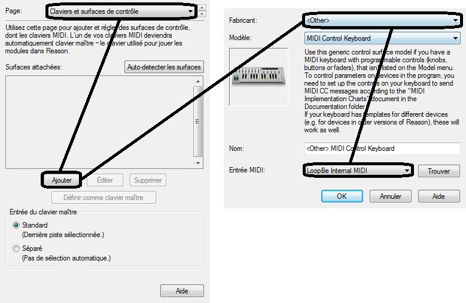
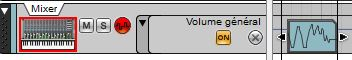
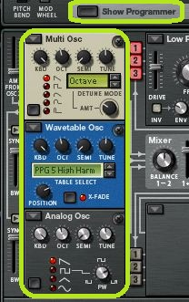
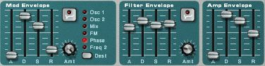
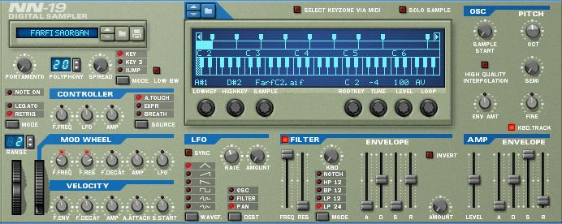

Il n'est pas facile de débuter avec un logiciel que l'on ne connaît pas, surtout quand celui-ci est destiné au milieu professionnel. Mais vous avez frappé à la bonne porte, car je m'apprête à rédiger un tutoriel complet sur Reason, un logiciel de MAO (Musique Assistée par Ordinateur) très puissant.
Si j'ai une chose à vous dire mes amis Zéros, c'est que pour Reason, il faut se lancer. C'est un logiciel professionnel et sa maîtrise complète nécessite des milliers d'heures d'apprentissage. Mais ne partez pas pour autant ! Il ne faut bien entendu pas tout ce temps pour pouvoir créer quelque chose de bien. Je vais m'efforcer de tout vous expliquer le plus clairement possible. Nous sommes sur le Site du Zéro, ce tutoriel est donc à la portée de tout le monde.
Reason est un logiciel de Musique Assistée par Ordinateur (MAO). C'est un véritable studio d'enregistrement : les instruments virtuels et les effets sont d'excellente qualité. Il est principalement destiné aux grosses productions musicales. Si vous n'avez jamais fait de MAO, je vous conseille de lire mon tutoriel sur FL Studio qui est beaucoup plus simple à prendre en main.
Reason comprend quelques avantages :
une qualité sonore exceptionnelle ;
une grande puissance dans l'ensemble grâce aux branchements manuels ;
la compatibilité PC et Mac.
Mais aussi des désavantages :
un séquenceur peu évolué, très gênant si on n'utilise pas de clavier MIDI ;
l'impossibilité d'utiliser des plugins VST ou autres.
Comme je le disais, il est donc très fortement recommandé d'utiliser un clavier MIDI.
Deux claviers MIDI de tailles différentes
On remarque que le clavier est composé de touches, mais aussi de boutons rotatifs et de boutons poussoirs qui pourront être assignés à n'importe quel paramètre de Reason. J'en reparlerai le moment venu.
Le MIDI (MMusical Instrument Digital Interface) est un protocole de communication entre votre clavier et votre ordinateur.
L'interface se constitue d'une prise DIN à cinq broches :
Cependant, les cartes son qui sont dotées d'un port joystick d'ancienne génération supportent aussi les signaux MIDI : il suffit d'ajouter un adaptateur.
Enfin, les claviers MIDI sont parfois dotés d'une interface USB, fonctionnalité plus pratique pour la majorité des gens.
Reason est un logiciel payant, mais une version de démonstration existe. Vous pouvez la télécharger ici. Installez Reason comme tout autre logiciel. Si vous avez un clavier MIDI, il faudra le sélectionner lors de l'installation ; si vous n'en avez pas, continuez sans rien sélectionner.
Il existe un petit soft qui permet de faire passer le clavier de votre ordinateur en clavier MIDI. Commencez par télécharger ces deux logiciels et installez-les :
Ouvrez ensuite Reason et allez dans « Éditer / Préférences » et dans la page « Contrôle avancé » :
Choisissez ensuite « LoopBe Internal MIDI » pour le Bus A et pour le port plus bas, ou votre clavier MIDI si vous en avez un. Ouvrez ensuite Reason MIDI Board et dans « MIDI In Device », optez également pour « LoopBe Internal MIDI » comme ceci :
Ce n'est pas encore fini : allez à la page « Claviers et surfaces de contrôle » et choisissez « Ajouter ». Prenez « other » comme fabricant et « LoopBe Internal MIDI » comme entrée MIDI :

Voilà, vous avez transformé le clavier de votre ordinateur en clavier MIDI. Pour fonctionner, Reason MIDI Board devra toujours être au premier plan lorsque vous voudrez jouer. Si vous possédez un clavier MIDI, exécutez la même démarche.
Vous l'aurez remarqué, il y a au démarrage de Reason un morceau de démonstration. Vous pouvez l'écouter pour avoir un aperçu des capacités du logiciel, mais pour des raisons de confort, nous allons configurer Reason afin qu'il démarre avec un projet vide.
Démarrez donc Reason et lancez un nouveau projet (Ctrl +N). Fermez ensuite l'ancien. Vous apercevez sur ce nouveau projet une table de mixage au-dessus de laquelle se situent deux autres modules. Je qualifierais ce projet de vide, étant donné qu'il ne contient aucun instrument. Enregistrez-le et donnez-lui un nom comme « Vide » par exemple. Rendez-vous ensuite dans les préférences (Éditer / Préférences) à la page générale :
Dans le morceau par défaut, choisissez « Personnalisé » et ouvrez le projet vide que vous venez de créer. Reason s'initialisera dorénavant avec un projet vide.
Pilote de carte audio
Dirigeons-nous maintenant vers la page Audio. Dans « Pilote de Carte Audio », choisissez « ASIO4ALL v2 » :
ASIO4ALL est un pilote ASIO à faible latence, c'est-à-dire que même si votre carte son n'est pas d'excellente qualité, ce pilote fera en sorte que cela n'affecte pas le rendu sonore. Si vous ne l'avez pas, vous pouvez le télécharger. Une fois ce pilote installé, vous devriez obtenir ceci :
Choisissez la sortie que vous voulez. En ce qui me concerne, j'ai éteint ma sortie HDMI dans la mesure où je ne m'en sers pas et que je veux écouter mes productions avec mes haut-parleurs.
Reason est installé et configuré. Ce chapitre ne vous a pas donné l'envie d'employer le logiciel ? Ne vous en faites pas, dans le prochain chapitre nous verrons comment réaliser nos premiers enregistrements. Ce sera beaucoup plus plaisant. :p
Nous allons commencer à faire un peu de pratique. Vous vous rendrez rapidement compte que Reason, ce n'est pas simplement jouer des notes et les enregistrer, mais c'est aussi brancher les instruments soi-même. Bien entendu, je vous expliquerai tout comme il faut, n'ayez pas peur. :D
Une première constatation peut être établie : le « Mixer » qui est dans le rack à modules se trouve également dans le séquenceur (à gauche). Ce sera la même chose pour tous les modules, instruments, et effets. Le séquenceur sert à placer les notes et les automations, j'en traiterai à nouveau plus tard.
Après ce rapide tour de l'interface, je vous propose de réaliser votre premier enregistrement. Il nous faut d'abord un instrument : choisissez-en un dans la boîte à outils et faites un glisser / déposer sous le mixer, ou un clic droit dans le vide sous le mixer.
Pour l'exemple, j'ai décidé d'utiliser le Thor. Retournons maintenant au rack pour aller voir les branchements en appuyant sur Tab :
Le branchement s'est fait automatiquement. Maintenez Shift enfoncé pendant que vous créez votre instrument pour ne pas le brancher automatiquement. Dans l'immédiat, il ne faut retenir qu'une chose. La sortie de Thor (Audio Output) va à l'entrée n°1 du mixer.
Pour Thor :
« Audio » => son ;
« Output » => sortie ;
« Left / Right » => gauche / droite.
Les sons de gauche et de droite qui sortent de Thor se rendent à l'entrée 1 de la table de mixage. C'est le branchement le plus basique, il faut le maîtriser ; ce n'est pas bien compliqué. Dès que vous apercevez un « Audio Output », il va forcément se brancher sur un « Audio Input » (regardez à droite de la quatorzième voie de la table de mixage, l'inscription « Audio Input »). Une sortie se branche toujours sur une entrée. Thor est un synthétiseur stéréo, c'est-à-dire qu'il agit sur le canal gauche et droit. Ce n'est pas le cas de tous les synthétiseurs. SubTractor, par exemple, est en mono. Il n'agit que sur un canal (le gauche) qui sera ensuite recopié à l'identique à droite. Dès lors, puisqu'il est mono, vous ne devez brancher que le canal gauche. C'est d'ailleurs marqué sur le mixer à gauche de la quatorzième voie (« Left mono »). Pour résumer, si vous avez un doute concernant les branchements, il y a toujours quelques indices écrits (en anglais certes).
Remarquez que la sortie du Mixer (Master Out) remonte plus haut. Il y a un « Combinator » et un « Hardware Device ». Le « Combinator » est un module comprenant quelques effets et le « Hardware Device » est la sortie générale (la carte son), à savoir vos haut-parleurs ou vos écouteurs qui sont branchés dessus.
Revenez maintenant à la face avant. Dans le séquenceur, sélectionnez Thor et jouez quelques notes sur votre clavier MIDI ou sur Reason MIDI Board. Vous devriez entendre du son et voir des témoins lumineux sur la table de mixage. Si ce n'est pas le cas, il faut revoir la configuration de votre matériel.
Observez le séquenceur :
Les deux indicateurs encadrés en rouge permettent de définir sur quel instrument et sur quelle bande de l'instrument l'enregistrement sera fait. On peut créer plusieurs bandes d'enregistrement par instrument en cliquant sur « New Alt » à droite du bouton d'enregistrement encadré en noir. La partie encadrée en vert agit sur la configuration du métronome (signal sonore donnant le tempo). « CLICK » permet de l'activer et « PRE » d'avoir un décompte avant l'enregistrement.
Lancez l'enregistrement (en activant le bouton encadré en noir) et jouez quelques notes. Il est utile d'activer le décompte pour avoir le temps de mettre Reason MIDI Board en premier plan.
Les enregistrements satisfaisants sont rares, surtout si on n’est pas un AS du piano. C'est pour cela que l'on peut éditer les notes enregistrées tout simplement en double-cliquant sur la bande d'enregistrement. Il y a divers outils tels que le crayon, la gomme, etc. Sur la même barre, vous pouvez choisir la position, la longueur, et la vélocité de la note :
Vous pouvez sortir du mode édition en cliquant sur le bouton situé tout à gauche de cette barre d'outils.
Les automations
Les automations permettent d'automatiser des paramètres. Si par exemple vous souhaitez que le volume général évolue au cours de votre composition, vous pouvez le faire en faisant un clic droit sur le paramètre à automatiser, puis en choisissant « Éditer l'automation » :
Une nouvelle bande apparait dans le séquenceur : elle servira à éditer votre automation. Nous allons d'abord faire un aperçu en lançant un enregistrement puis en modifiant le paramètre en question :

On aperçoit notre automation dans le cadre bleu pendant l'enregistrement. Pour la modifier, il suffit de faire un double-clic sur le cadre puis d'éditer la forme avec l'outil crayon :
On utilisera beaucoup les automations avec les effets ; j'en reparlerai plus loin.
Comme vous avez pu le constater, l'enregistrement n'est pas très compliqué. Pour ce qui est des branchements, ne vous inquiétez pas, il y aura plus dur. :p
Vous les avez utilisés sans savoir comment ils fonctionnaient, alors accrochez-vous car je vais tout reprendre, et vous expliquer de A à Z le fonctionnement des synthétiseurs.
Dans ce chapitre, nous nous intéresserons à SubTractor, Thor et Malström.
Pour commencer, saviez-vous que le son était une vibration de l'air ? Cette vibration va faire vibrer vos tympans avant d'être transmise à la chaîne des osselets qui contiendrait plus de 20 000 capteurs (un par fréquence). Ces capteurs traduisent les sons en signaux électriques qui seront ensuite analysés par le cerveau :
Bref, pour faire un son, il faut faire vibrer l'air. C'est le rôle des haut-parleurs ou des écouteurs avec leur membrane mobile. Mais pour faire bouger leur membrane, il nous faut un signal électrique. C'est là qu'interviennent les oscillateurs. Leur rôle consiste à créer un signal périodique :
Vous pouvez observer ci-dessus un exemple de signal périodique : il est tantôt positif, tantôt négatif. Quand le signal est positif, la membrane du haut-parleur avance, et lorsqu'il est négatif, elle recule, créant ainsi une vibration. L'oreille humaine peut entendre les sons allant de 20 Hz (Hertz) à 20 000 Hz en moyenne. Cela dépend bien sûr de l'individu et de son âge. 20 Hz correspond à vingt aller-retours de la membrane du haut-parleur par seconde, ce qui est un son très grave. En dessous de 20 Hz, les fréquences sons appelés les infrasons (les éléphants utilisent ces fréquences pour communiquer :D ). 20 000 Hz est un son très aigu ; au-dessus de cette fréquence, ce sont les ultrasons (les chauves-souris les utilisent comme radar). Je vous explique tout ceci pour que vous compreniez bien à quoi vont nous servir les oscillateurs.
Les oscillateurs
Pour en revenir à Reason, on repère les oscillateurs grâce au « Osc » écrit à leurs côtés :

De gauche à droite : SubTractor, Thor et Malström. Si l'on choisit Thor, il faut cliquer sur « Show Programmer » pour dérouler sa structure. Tous les oscillateurs sont presque pareils. Ils ont en tout cas les mêmes fonctions.
On peut choisir la forme d'onde (waveform) à l'aide d'un petit dessin représenté à côté ou par le nom du signal (qui est en anglais).
La fréquence du signal peut être repérée par les paramètres « octave », « semis » et parfois « cent » ou « tune ».
Modifiez le timbre de la note avec « KBD » ou Shift.
Le décalage de l'onde d'un oscillateur par rapport à l'autre oscillateur est contrôlé par les boutons « Phase », « Sync » ou « Index ».
Voilà pour ce qui est des réglages principaux communs à tous les oscillateurs.
Nous allons étudier l'enveloppe ADSR. Mais pour commencer, qu'est-ce qu’une enveloppe ? Une enveloppe sert à contenir une lettre faire varier la valeur d'un paramètre en fonction du temps. Pour commencer, nous allons prendre le paramètre du volume. Quand vous appuyez sur une touche de votre clavier, la note met un certain temps à atteindre son volume maximum (parfois instantané). Si vous ne relâchez pas la note, son volume va redescendre légèrement, mais rester un certain temps constant. Enfin, le volume de la note va redescendre jusqu'à ce que l'on ne l'entende plus. Voilà de quoi est constituée l'enveloppe ADSR :
A pour l'attaque, le temps de montée (attack).
D pour le temps de déclin (decay).
S pour le maintien (sustain).
R pour le temps d'extinction après le relâchement de la touche (release).
Du coup, je n'ai presque pas besoin de vous présenter les enveloppes de Reason :D :

Une enveloppe n'agit pas seulement sur le volume, elle peut également influer sur un filtre ou un autre paramètre. Il y a deux manières de le savoir :
C'est directement marqué. Par exemple, « Filter Env » est l'enveloppe du filtre, « Amp Env » celle de l'amplitude...
Vous pouvez choisir le paramètre. Le « Mod Env » du SubTractor vous permet de le faire.
Un petit cas particulier : sur le Malström se trouve une enveloppe, juste derrière les oscillateurs, qui contrôle l'amplitude de chacun de ces deux oscillateurs.
Un filtre, comme son nom l'indique, sert à filtrer le son. Certains filtres ne laissent passer que les sons aigus ou graves. Un exemple que vous devez sûrement connaître est l'égaliseur.
Le filtre prend plusieurs paramètres :
le type (quelles fréquences sont filtrées) ;
la fréquence de coupure qui correspond à une atténuation de -3 dB (décibels) ;
la pente exprimée en dB / Octaves.
Souvent, il y a un autre paramètre très utilisé : la résonance. Le son est amplifié à la fréquence de coupure :
L'effet qui en résulte est très convainquant, surtout si l'on s'amuse à modifier la fréquence de coupure.
Allons voir ce que cela donne du côté de Reason :
Les réglages principaux :
« Freq » pour la fréquence de coupure ;
« Res » pour la résonance ;
« Lp », « Bp », « Hp » pour le type ;
parfois, il y a « Env » et « Kbd ». Nous avons déjà vu cela.
Voici les types de filtres :
Lp 12, low pass 12 db / octaves ou passe basse 12 db / octave en français. C'est un filtre qui ne laisse passer que les basses fréquences (graves), et qui a une pente faible de 12 décibels par octave.
Lp 24, pareil que pour le Lp 12 sauf que sa pente est de 24 décibels par octave.
Hp, high-pass, passe haute en français. Il ne laisse passer que les hautes fréquences.
Bp, band-pass, passe bande en français. Il ne laisse passer que les fréquences du milieu (médiums).
Enfin, le coupe-bande qui bloque la fréquence du milieu et laisse passer les graves et les aigus.
Le LFO (Low Frequency Oscillation / oscillation de basse fréquence) permet de faire varier la valeur d'un paramètre périodiquement. Il se compose d'un oscillateur de très basse fréquence dont on peut modifier la forme d'onde ainsi que la fréquence. Par exemple, si votre LFO est de forme sinusoïdale et qu'il est lié au volume, celui-ci oscillera, montant et descendant selon la forme et la fréquence du LFO.
Les réglages sont similaires à ceux des oscillateurs. On règle la fréquence, la forme d'onde et le paramètre sur lequel agir avec « Rate ».
Pour Thor, il faut descendre pour assigner le LFO :
Ce cadre permet entre autres d'assigner les LFO. Pour la source, prenez LFO, puisque c'est le paramètre que l'on veut assigner. Choisissez un paramètre de Thor comme destination et réglez la quantité avec « AMOUNT ».
Voilà, nous avons parcouru tous les composants essentiels d'un synthétiseur. Les structures de ces trois synthétiseurs varient de l'une à l'autre, mais avec ce que nous venons d'assimiler, je pense que vous devriez vous en sortir. Si vous n'avez pas envie de faire des réglages, il reste les presets en haut à gauche de chaque synthétiseur.
Bien entendu, il n'y a pas que les synthétiseurs qui produisent du son. Tous les autres instruments avec lesquels nous travaillerons sont similaires aux synthétiseurs. Ils possèdent quasiment les mêmes réglages, mais au lieu de générer du son avec des oscillateurs, ils prennent ce que l'on appelle un échantillon.
Pour commencer dans cette série de samplers, nous allons considérer le NN-19.

On remarque qu'il possède un LFO, un filtre, une enveloppe, et un oscillateur (qui n'en est pas un :D ). Je ne vais pas expliquer à nouveau tous ces effets, juste la partie « OSC » qui contrôle non pas un oscillateur, mais l'échantillon. Pour le reste, il n'y a rien de bien particulier à dire à ce sujet, si ce n'est que l'on ne peut travailler qu’avec les patchs inclus dans Reason.
NN-XT
Nous allons continuer avec le NN-XT qui est bien plus puissant. Quand vous l'ouvrez, vous tombez sur une partie réduite qui ne comprend que les réglages principaux. Vous pouvez tout dérouler avec la petite flèche en bas à gauche :
Vous obtenez donc :
Le fonctionnement est simple : dans le cadre bleu à gauche, vous pouvez importer un échantillon. Il suffit pour cela de cliquer sur « Load Sample ». Il vous est ensuite possible d'apporter des modifications à son étendue sur le clavier. Tous les effets présents autour du cadre ne s'appliquent que pour le sample sélectionné. Vous les connaissez déjà, je vais donc me limiter à l'explication des réglages du sample.
Le bouton « Root » sert à définir la note fondamentale quand le sample s'étend sur plusieurs notes. La note fondamentale est la note à laquelle l'échantillon ne changera pas de ton. Le bouton « Tune » permet de changer la tonalité du sample.
À droite, les boutons « START » et « END » permettent tout simplement de définir le début et la fin du sample si vous souhaitez en supprimer une partie.
Les boutons « LOOP START » et « LOOP END » ont pour fonction de mettre en boucle une partie de l'échantillon tant que la note est maintenue. Par exemple, on mettra en boucle la partie du milieu dans le cas d'un violon.
« PLAY MODE » vous offre la possibilité de choisir le mode de lecture (avec maintien, avec boucle…).
« LO KEY » et « HI KEY » changent l'étendue du sample sur le piano. Quant à « LO VEL » et « HI VEL », ils servent à choisir la vélocité minimale et maximale.
Pendant que les boutons « FADE » jouent sur la personnalisation d'un fondu en entrée ou en sortie, « ALT » permet de les alterner.
Enfin, le bouton « OUT » vous laisse décider des sorties vers lesquelles sera dirigé l'échantillon. Il y a dix-huit sorties à l'arrière du rack.
Il y a un autre moyen d'insérer des percussions : en faisant appel à la boîte à rythmes Redrum.
Un bouton « Play » est à votre disposition en haut de chaque sous-instrument, à gauche des boutons « Mute » et « Solo ». Il y a des réglages tels que la longueur du sample, son volume, sa tonalité, sa vélocité... Chaque sous-instrument correspond à une touche du clavier et possède également une sortie si vous retournez le rack.
Redrum possède un séquenceur entièrement paramétrable pas à pas. Il y a quatre banques de huit patterns. On peut régler la longueur avec « STEPS » d'une part, la résolution et l'accent d'autre part. Il faut d'abord sélectionner le sous-instrument avant de le placer sur le séquenceur « RUN » qui offre un aperçu du résultat.
En bas à gauche, l'option « Channels 8 & 9 exclusive » permet de couper les sons du canal 9, qui eux-mêmes couperont les sons du canal 8 lorsqu'ils seront joués.
Enfin, pour envoyer le contenu du séquenceur intégré au séquenceur principal, il faut faire un clic droit sur une zone neutre et choisir « copier le pattern sur la piste ».
C'est fini pour les instruments à échantillon. Comme vous avez pu le constater, ils ne sont pas si différents des synthétiseurs.
Après les instruments, nous allons aborder les effets. Vous en avez déjà vu dans certains instruments tels que le filtre. Rassurez-vous, il y en a beaucoup d'autres.
Pour commencer, nous allons entreprendre l'ouverture d'un instrument et d'un effet sans les brancher (maintenir Shift). Un effet se branche entre l'instrument et la table de mixage comme ceci :
Je ne pense pas que cela puisse poser problème : c'est encore un branchement très simple.
Trajet du signal
Sur la face arrière de l'effet à gauche se trouvent deux ou trois petits graphiques qui donnent des informations sur le branchement et le trajet du signal.
Peut être connecté en mono en entrée et en sortie.
Peut être connecté en mono en entrée et en stéréo en sortie. Ce module produit donc un effet stéréo à partir d'une source mono.
Le module traite le signal de chaque côté de manière indépendante.
Le signal sera additionné (pour être en mono) puis traité.
L'effet est calculé à partir des informations reçues sur les deux entrées, mais les traite indépendamment (elles ne sont pas additionnées).
C'est un filtre simple comme nous en avons déjà rencontré, mais qui a la particularité d'avoir une enveloppe sur sa fréquence de coupure. On peut régler son impact avec le troisième bouton rotatif. On retrouve à sa gauche un bouton sélecteur. « On » et « Off » permettent d'activer ou de désactiver l'effet, « Bypass » de le court-circuiter : le son passera, mais l'effet n'agira pas.
Reverb numérique
Ce module crée un effet de spatialisation comme un grand hall, une salle de concert, une église, etc.
Différents algorithmes sont présents, indiqués par un écran. Des boutons rotatifs permettent d'affiner les paramètres de ces algorithmes :
« Size » règle la taille de la pièce virtuelle ;
« Decay » détermine la durée de la réverbération ;
« Damp » atténue les aigus pendant la réverbération ;
« Dry / Wet » contrôle le mélange entre le signal non traité et le signal traité.
Ligne de délai numérique
Le délai permet de répéter une note avec un retard. On peut régler ce retard avec l'écran situé à gauche, de même que l'unité qui sera soit en ms (millisecondes), soit en Steps (nombres de pas, basé sur le tempo). Le nombre de répétitions du délai peut être réglé à l'aide du bouton rotatif « Feedback ».
Distorsion Foldback
Il s'agit d'un module de distorsion très simple doté de deux boutons rotatifs seulement :
« Amount » s'occupe de régler la quantité de distorsion ;
« Foldback » définit le caractère de la distorsion. Des dessins situés autour du bouton donnent un aperçu de la modification de la forme d'onde.
Chorus / Flanger
Cet effet combine le Chorus et le Flanger dans un même module. Les réglages sont semblables à ceux que nous avons déjà observés. Le bouton « Sync » permet de synchroniser le LFO au tempo tandis que le bouton « Send mode » fait passer le module en mode auxiliaire. Nous aborderons ce mode dans le prochain chapitre, et nous nous apercevrons que c'est une autre façon d'utiliser un effet. Actuellement, nous employons les effets en mode insertion. Pour cela, on insère le module d'effet entre l'instrument et la table de mixage.
Fonctionnement du Chorus
L'effet Chorus donne l'illusion que plusieurs instruments jouent en même temps alors qu'il n'y en a qu'un seul. Comment est-ce possible ? Quand plusieurs instruments sont employés simultanément, deux violons par exemple, la synchronisation n'est pas parfaite : il y a un léger retard de quelques ms. Le module Chorus va dès lors tout simplement ajouter des retards à notre signal original comme sur le schéma simplifié ci-dessous :
Fonctionnement du Flanger
Le Flanger est similaire au Chorus. Il n'y a qu'un retard, mais il est variable. C'est-à-dire qu'on lui rajoute un LFO. De plus, le retard est moins important que celui d'un Chorus.
Phaser
Le Phaser ressemble au Flanger. Mais au lieu de n'avoir qu'un seul retard variable, il en a plusieurs (quatre pour celui de Reason) :
Le « Feedback » réinjecte le signal de sortie à l'entrée. Quelques fois, le Flanger en est également doté.
Il y a une chose que je n'ai pas représentée sur le schéma. Avant de passer dans les retards variables, le signal d'entrée est séparé en quatre avec des filtres. Ensuite, chaque partie du signal va dans un retard variable. Ces parties de signal sont appelées « Crans », dont on peut régler la largeur et la distance de séparation avec les paramètres « WIDTH » et « SPLIT ». Les retards variables ont pour but d'atténuer ou d'amplifier certaines fréquences et, étant donné que les retards sont variables, ce qui est atténué ou amplifié change.
Unison
Unison est tout simplement une sorte de Chorus dont les voies sont légèrement désaccordées afin de rendre un son plus riche. On peut en régler le nombre de voies et le désaccord.
Compresseur / Limiteur
Cet effet permet d'amplifier les sons peu élevés et d'atténuer les sons trop élevés afin d'obtenir un rendu homogène. Ce module comporte quatre paramètres :
« Ratio » définit la réduction si le niveau de seuil est dépassé ;
« Treshold » règle le niveau de seuil de compression (réduction) ;
« Attack » est, comme pour l'enveloppe, le temps mis par le compresseur pour réduire le son qui passe au-delà du seuil ;
« Realase » est, là aussi de la même façon que pour l'enveloppe, le temps mis par le compresseur pour bloquer l'atténuation du signal.
« Gain » permet de visualiser le travail du compresseur.
L'egaliser
L'egaliser est similaire à un filtre, sauf que le premier comporte deux fréquences de coupure. Pour chacun des filtres, vous pouvez régler la fréquence de coupure, la pente, et l'amplitude.
d'un processeur d'image stéréo, qui donne un effet stéréo ;
d'un compresseur ;
et d'un limiteur.
Nous avons déjà parcouru tous ces effets. Ils ont simplement quelques réglages supplémentaires que je vous laisse découvrir.
Reverb avancé
Comme son nom l'indique, c'est un module de réverbération avancé de haute qualité. Il embarque neuf algorithmes de réverbération et d'écho différents. Il se compose de nombreuses présélections que vous pouvez affiner à l'aide du programmer. Enfin, il contient un egaliser et un effet gate permettant de recréer n'importe quel type de réverbération.
Distorsion Scream 4
Scream 4 est un module de déstructuration sonore avancé capable de transformer rapidement n'importe quel son. Ce module propose de nombreux algorithmes de distorsion et de déstructuration sonore pouvant être cumulés à un égaliseur et à une section de résonance permettant d'effectuer n'importe quelle manipulation sur la matière sonore. Il contient également de nombreuses présélections.
Il ne faut pas lésiner sur les effets : vous parviendrez, à l'aide d'automations, à rendre la musique que vous créez plus vivante.
Reason possède deux types de mixer, un petit et un plus conséquent :
Jusqu'à maintenant, nous avions utilisé le gros mixer, mais sachez qu'il en existe un plus petit avec moins de fonctions. À quoi sert-il ? Sûrement à économiser de la place si l'on n'utilise pas toutes les fonctions du plus gros. Personnellement, je n'utilise que le gros et je vous conseille de faire de même.
Le mixer 14:2 comporte quatorze voies, chaque voie comportant :
un curseur linéaire pour régler le niveau du canal ;
une étiquette qui donne le nom du module qui lui est connecté ;
un vumètre qui représente graphiquement le niveau du canal ;
un bouton rotatif de balance qui permet de définir la position gauche / droite du signal ;
un petit egaliser sur deux bandes que vous pouvez activer en cliquant sur le bouton « EQ » à ses côtés ;
Nous avons vu dans le chapitre précédent que pour employer un effet, il faut l'insérer entre l'instrument et le mixer. On dit dès lors qu'il est placé en insertion :
L'intégralité du son émis par l'instrument passe par l'effet.
Il existe une autre façon de placer un effet que l'on appelle « envoi » ou « auxiliaire » :
À la différence de l'insertion, le son original se rend à deux endroits. Il va directement à la sortie du mixer, mais aussi dans l'effet. On entend ainsi le son original non traité et le traitement de l'effet par-dessus. Cette méthode est utilisée pour les effets d'écho et de réverbération, par exemple.
Voici les effets pouvant être utilisés en insertion ou en auxiliaire :
Reverb ;
Delay ;
Chorus/Flanger ;
Unison.
Maintenant, les effets employés en insertion de préférence :
Egaliser ;
Image stéréo ;
Compresseur ;
Maximiser ;
Distorsion ;
Filtre ;
Phaser.
Pratique
Je vais aborder un dernier point avant de passer aux branchements. Plus tôt dans ce tutoriel, je vous avais fait un schéma montrant le trajet réel du signal dans la table de mixage :
L'auxiliaire 4 est un peu spécial, il a un mode dit « Préatténuateur » qui permet, lorsqu'on l'active, de récupérer le signal avant le curseur de réglage du volume.
Nous pouvons maintenant passer au branchement. Commencez par retourner le rack :
Pour mettre un effet en auxiliaire, il suffit de brancher la sortie « Send out » du mixer à l'entrée de l'effet. Branchez ensuite la sortie de l'effet à l'entrée « Return » de la table de mixage comme ceci :
Retournez en face avant. Nous nous intéresserons maintenant à la quantité d'envoi et de retour :
Sur chaque voie, un bouton rotatif permet d'envoyer une partie du signal dans l'effet. À droite, également avec un bouton rotatif, il est possible d'ajuster le volume du retour de l'effet. Le petit bouton « P » à côté des boutons d'envoi de l'auxiliaire 4 permet de le mettre en mode « Préatténuateur ». J'ai réalisé un petit schéma pour ceux qui auraient un peu de mal à comprendre :
Si vous commencez à faire des grosses productions, vous vous apercevrez vite qu'une seule table de mixage ne suffira pas. Il faudra donc en créer d'autres, mais comment les relier entre elles ? Une première méthode serait de brancher la sortie d'une table de mixage à une voie libre de l'autre. Cette méthode est la seule si vous voulez brancher une petite table de mixage à une autre, plus grosse par exemple. Mais pour relier deux gros mixer entre eux, ce n'est pas de cette façon que l'on procède. Il existe un moyen plus « propre » : relier la sortie « Master Out » d'une table de mixage à l'entrée « Chainig Master » de l'autre. Voici un petit schéma illustrant mes propos :
Cette méthode empêche le son d'un instrument branché sur le mixer 2 de passer dans le réglage du volume master des mixer 1 et 2.
Chaîne d'auxiliaire
La chaîne d'auxiliaire vous propose de récupérer les effets du mixer 1 dans le mixer 2. Il faut pour cela simplement brancher les sorties « Send Out » du deuxième mixer aux entrées « Chaining Aux » du mixer 1 :
Sur le mixer 2, il ne faudra s'occuper que des volumes d'envoi, le volume de retour étant déjà présent sur le mixer 1.
J'ai mis les trajets importants en vert, trajets qui vont du mixer 2 au premier. Sur le mixer 2, on observe que nous n'avons pas besoin de volume de retour, étant donné que nous n’avons aucun effet branché en auxiliaire dessus.
Par exemple, si je veux que la voie 2 de mon second mixer passe par l'effet du mixer 1, il faudra que j'augmente le volume de départ. Ensuite, le signal montera dans le premier mixer, passera par l'effet, le volume de retour de l'effet en question sur le premier mixer, et enfin s'en ira au master.
Vous pouvez très bien envoyer seulement une ou deux voies send, ou alors aucune, et rajouter d'autres effets auxiliaires sur le second mixer.
Dans ce chapitre, nous nous sommes surtout attaqués aux envois d'effets, vu que mis à part ceux-ci, il n'y a pas grand-chose à dire sur la table de mixage. Si vous n'êtes pas à l'aise, le meilleur moyen est de vous entraîner. Comme je l'ai dit au début du tutoriel, il faut passer beaucoup de temps à « bidouiller » pour bien maîtriser le logiciel.
Avec ce que vous avez vu dans cette partie, vous pouvez réaliser pas mal de choses. N'hésitez pas à bien vous entrainer avant de passer à la partie 2.
Dans Reason, il existe deux types de câblage : les signaux audio et les signaux CV (Contrôle de Voltage). Les signaux CV servent à contrôler les paramètres d'un module à partir d'un autre.
Par exemple, on peut récupérer le LFO d'un module afin de l'appliquer à un paramètre d'un autre module.
La modulation est un signal électrique qui peut varier entre 0 et 1 (unipolaire) ou entre -1 et 1 (bipolaire). Peu importe les unités ; nous avons une valeur minimum, une valeur maximum et des valeurs intermédiaires. Ce signal électrique varie au cours du temps. Prenons l'exemple d'une enveloppe :
L'amplitude maximale correspond à la valeur 1. On observe bien l'allure du signal en fonction du temps. Si j'ai envie d'appliquer cette enveloppe au volume général d'un autre module, il me faudra effectuer le branchement nécessaire. Le signal passera dès lors dans le fil jusqu'au module en question, et contrôlera le paramètre voulu.
Les branchements CV sont repérables dans le logiciel par la couleur de leurs câbles (le jaune) et par leurs connexions plus petites que les signaux audio.
Je vais prendre le SubTractor en tant qu'exemple :
Nous pouvons observer une grosse connexion pour la sortie audio complètement à droite. Le reste, ce sont de petites connexions pour les signaux CV. Parmi ces connexions, on remarque un groupe « Modulation Output ». Ce sont les modulations au format électrique de certains éléments du SubTractor : ici, deux enveloppes et le LFO 1. Un peu plus à gauche, on trouve « Modulation Input ». Il s'agit des entrées de modulation pour contrôler certains paramètres du SubTractor. Nous aborderons le reste des connexions CV un peu plus tard.
Nous allons nous mettre en conditions de travail sur une compo. Deux modules nous sont accessibles : un SubTractor et un Malström. Sur le Malström, les modulations ont des formes très intéressantes :
J'aimerais me resservir de cette forme de modulation que l'on ne trouve que dans Malström, disons sur l'étendue de la fréquence de coupure du premier filtre du SubTractor.
Tout d'abord, il faut repérer la sortie de la modulation sur le Malström :
Choisissez la A ou la B. Ensuite, il faut repérer la destination :
Notez le bouton rotatif à sa gauche pour régler l'impact. Il ne reste plus qu'à relier les deux et le tour est joué.
Ce groupe de connexions permet de faire jouer le module à partir d'un autre.
Il existe en effet des modules séquenceurs ou des modules qui en sont dotés (comme le Thor). J'en reparlerai dans un prochain chapitre.
Gate input
Ce groupe d'entrées permet de déclencher des enveloppes à partir d'un signal CV.
Lorsque l'on branche quelque chose à ces entrées, le déclenchement normal des enveloppes est interrompu. C'est la modulation qui en a le contrôle exclusif.
Le Thor
Si vous êtes un peu curieux, vous avez sûrement dû aller vous renseigner sur ce qu'il en est pour Thor :
Ah ! Je pense que vous avez remarqué le petit problème : on ne sait pas à quoi correspond CV1, CV2… Eh bien, c'est nous qui allons le déterminer.
Retournez le rack et déroulez Thor :
Ceci est une table de modulation, elle permet d'assigner différentes sources de modulation (comme un LFO, une enveloppe…) à certains paramètres sans faire de branchements (tant que les paramètres restent à l'intérieur du Thor).
Nous allons d'abord aborder la partie gauche de cette table. Dans la première colonne, on choisit une source (le premier LFO par exemple). Ensuite, on choisit une destination (hauteur de l'oscillateur 2). De ce fait, le LFO1 contrôlera Osc2. Il ne reste plus qu'à régler la quantité avec « AMOUNT » ; elle peut varier entre -100 et 100.
La colonne « SCALE » permet d'agir sur la quantité de modulation. Si vous y mettez une enveloppe par exemple, la quantité de modulation du LFO1 sur Osc2 variera en prenant la forme de l'enveloppe. La deuxième colonne, celle intitulée « AMOUNT », définira la quantité de cette variation.
Vous avez cet ensemble « SOURCE -> DEST -> SCALE » en sept exemplaires.
Il y a un autre ensemble, « SOURCE -> DEST1 -> DEST2 -> SCALE », en quatre exemplaires. Il fonctionne de la même manière, sauf que la source se rend à deux destinations avec des quantités de modulation différentes.
Enfin, il existe l'ensemble « SOURCE -> DEST -> SCALE1 -> SCALE2 », qui permet de contrôler la quantité de modulation entre la source et la destination avec deux paramètres.
Dans les sources, vous pouvez assigner les boutons poussoirs et rotatifs du panneau avant :
Pour cela, il faudra visiter la section « Modifieurs ».
Vous pouvez également assigner les entrées CV du panneau arrière ainsi que les sorties CV dans les destinations.
Nous l'avons découvert dans le chapitre précédent, certaines entrées CV permettent de faire jouer l'instrument. On utilise alors un séquenceur ou un arpégiateur.
Ce module ne produit pas de sons par lui-même : il doit pour cela être connecté à un module instrumental. Mais pourquoi utiliser un autre séquenceur que le principal ?
Le séquenceur Matrix joue de façon répétée une boucle (3). On peut modifier sa longueur avec les boutons « Steps » et « Resolution » à droite (4). Créer une boucle avec le Matrix est simple, rapide, et beaucoup plus interactif que le séquenceur principal. Cela évite aussi de jouer les notes au piano.
On peut ajouter des variations à cette boucle grâce aux différents patterns et banques (1). Vous avez à disposition quatre banques (A, B, C et D), chacune de ces banques contenant huit patterns.
Enfin, vous pouvez choisir la plage de notes sur laquelle vous désirez créer votre boucle (2).
Faire jouer ce séquenceur dans votre composition
Vous pouvez à tout moment avoir un aperçu de votre boucle en utilisant le bouton « Run » (1).
La lecture de ce séquenceur se déclenche automatiquement, en même temps que la lecture générale et au même tempo. Vous devrez faire une automatisation pour changer de pattern ou de banque. Vous pouvez aussi insérer le pattern sur le séquenceur principal en faisant un clic droit dans une zone neutre et en choisissant « copier le pattern sur la piste ».
Les branchements
La sortie « Note CV » va se brancher dans le groupe « Seq control » à l'entrée « CV ». La sortie « Gate CV » se branchera dans une entrée « Gate ».
La troisième sortie correspond à la courbe, on peut la brancher à n'importe quelle entrée de modulation. On peut accéder à cette courbe en sélectionnant « Curve » (2).
Le Thor n'est pas qu'un simple synthétiseur, il embarque aussi un séquenceur qui lui est directement intégré. Il se trouve tout en bas de sa structure :
À sa gauche, on retrouve un bouton « RUN » pour le mettre en route et un bouton « MUTE » afin de le placer en sourdine.
On arrive à un bouton sélecteur :
« Repeat » fait jouer la boucle à l'infini ;
« 1 SHOT » permet de ne lire la boucle qu'une fois ;
« STEP » modifie le pas à chaque action sur le bouton « RUN ».
Le deuxième bouton sélecteur sert à choisir le mode de lecture.
« FORWARD » : dès que la boucle arrivera à la fin, elle reviendra au début.
« REVERSE » : la lecture de la boucle est inversée.
« PENDULUM 1 » : la boucle se lit normalement. À la fin, au lieu de retourner au début, elle se lit de façon inverse avec répétition sur le dernier pas.
« PENDULUM 2 » : agit comme le 1 mais sans répétition sur le dernier pas.
« RANDOM » : lecture aléatoire.
La partie « SYNC » a pour fonction de synchroniser la boucle avec le tempo.
L'utilité du bouton « EDIT » est de pouvoir choisir sur quel paramètre jouer :
« NOTE » pour jouer sur les notes du Thor ;
« VELOCITY » pour jouer sur le volume des notes du Thor ;
« GATE LEN. » pour jouer sur la longueur des notes du Thor ;
« STEP DUR. » pour jouer sur la longueur des pas du Thor ;
« CURVE 1 et 2 » pour jouer sur les deux sorties disponibles.
Enfin, nous avons le séquenceur. Les boutons rotatifs permettent d'en régler la valeur, et les boutons carrés d'activer ou de désactiver le pas. Tout à droite se situe le bouton « RESET » dont l'emploi offre de remettre les pas à zéro et le bouton « STEPS » qui laisse choisir le nombre de pas que contiendra la boucle.
Ce module n'agit pas comme les séquenceurs. Ce n'est pas nous qui allons déterminer les notes à jouer, mais le module qui se chargera d'ajouter des notes sous forme d'arpèges.
À gauche, vous avez un bouton rotatif, pour choisir la vélocité (volume des notes). Le bouton « HOLD » permet de continuer à jouer même si vous relancez la note. Quant à « Octave shift », vous pouvez l'utiliser afin de facilement changer d'octave.
La partie supérieure du milieu correspond aux arpèges, la partie inférieure à la synchronisation. Enfin, la partie de droite correspond au pattern. Vous pouvez y visualiser les arpèges et modifier la boucle.
Il suit le même principe, mais avec des signaux CV :
Il y a cependant quelques particularités, comme le réglage de la quantité pour la partie de gauche, et la quatrième sortie qui est inversée pour la partie de droite.
Veuillez m'excuser pour ce chapitre très très court, mais il fallait bien que je mette ces deux modules quelque part. ;)
C'est un module un peu spécial, qui permet de regrouper plusieurs instruments et effets afin de pouvoir les jouer simultanément, ou pour sauvegarder leurs associations.
En effet, il se peut que vous ayez trouvé une combinaison d'instruments et d'effets que vous voudriez sauvegarder pour pouvoir la réutiliser dans d'autres compositions. Grâce à ce module, vous pourrez désormais le faire.
Nous allons étudier une première application de ce module : la combinaison d'effets. Commencez par ouvrir un combinator :
Il se compose d'un panneau de contrôle et d'un espace vide en-dessous. C'est dans cet espace que nous allons ajouter nos effets :
J'ai ajouté un effet sans le brancher.
Je vous propose d'aborder les quatre paires de connexions que j'ai encadrées. Les deux paires de connexions supérieures sont faites pour être branchées à l'extérieur du combinator. Comme, dans cet exemple, les modules à combiner sont des effets, on branchera le « Combi Input » après un instrument et le « Combi Output » à la table de mixage par exemple.
Pour ce qui est des deux paires de connexions inférieures, elles sont faites pour être branchées avec les modules internes au combinator. On branchera le « To Devices » à l'entrée du premier effet et le « From Devices » à la sortie du dernier effet :
Combiner des instruments
On peut également combiner des instruments avec le combinator. Pour ce faire, il suffit simplement de brancher la sortie de l'instrument à l'entrée « From Devices » du combinator.
Pour combiner plus d'un instrument, il faudra mettre en place une table de mixage. Les utilisateurs de Reason ont pris l'habitude de choisir le mixer de ligne pour les combinators.
Dans les configurations du combinator, on peut assigner une plage de notes à chaque instrument qu'il contient. Au lieu de nous retrouver avec des instruments qui jouent tous simultanément, nous pourrons de cette façon n'assigner que les basses lorsque nous jouons une note grave, et inversement n'invoquer que le « Lead » quand nous appuyons sur une note aigüe.
Il faut d'abord dérouler la page de configuration. Ensuite, nous sommes invités à sélectionner l'instrument en question et à changer sa zone de jeux.
Vous pouvez également décider s’il doit recevoir les notes jouées en cochant ou en décochant la case « Reception notes ».
Utilisation des commandes de la face avant
Vous l'aurez sûrement remarqué, la face avant contient des boutons. Ils peuvent être assignés à n'importe quel paramètre de n'importe quel module que le combinator contienne. Pour les assigner, il suffit d'éditer la page « Modulation routing » :
Rien de plus simple : on choisit la source et la cible.
On ne peut pas mettre un combinator dans un autre combinator.
Il faut éviter les routages externes, c'est à dire brancher un module qui se trouve dans le combinator directement sur un module externe au combinator. Ces branchements sont possibles, mais ils ne seront pas sauvegardés (si vous désirez sauvegarder votre association).
Enfin, pour sauvegarder votre association de modules, il vous faudra sauvegarder le patch du combinator.
Le vocoder a pour fonction principale de modifier les voix, en les mélangeant à un synthétiseur. Pour cela, nous avons à disposition un vocoder numérique de haute qualité.
Cette technique est incontournable de nos jours. On la retrouve en effet dans un bon nombre de morceaux électro / pop soit pour complètement déformer la voix, soit simplement afin de l'embellir.
Pour mélanger votre voix à celle d'un synthétiseur, il vous faudra donc deux sources :
une source vocale ;
un synthétiseur qui puisse produire un son riche en harmoniques (en dents de scie par exemple).
Ensuite, il faut donner l'illusion que le synthétiseur parle ! C'est-à-dire qu’à la place du son de votre voix, il nous faut le son que produit le synthétiseur.
Mais c'est possible de faire ça ?
Bien sûr ! Tout d'abord, observons votre voix :
Graves à gauche, aigus à droite
Observons également votre synthétiseur :
Maintenant, il faudrait que le synthétiseur ait la même forme que votre voix. Nous allons donc les couper en un certain nombre de bandes comme ceci :
Ensuite, on modifie chaque bande de la porteuse (carrier, votre synthétiseur) pour qu'elles aient les mêmes niveaux que la modulation (modulator, votre voix) :
La superposition
Au final, le synthétiseur produit un son proche de votre voix, en bien plus robotisé.
Pour un vocoding réussi, il faut que le synthétiseur produise un son riche en harmoniques, de sorte que le vocoder puisse toujours trouver une correspondance entre une fréquence de votre voix et celle de votre synthétiseur. Dans le cas contraire, si une fréquence qui se trouve dans votre voix est absente dans le synthétiseur, il y aura en sortie un trou et cela pourrait produire un son sourd. En conséquence, si vous disposez d'un filtre qui coupe les hautes fréquences, ouvrez-le. Sinon, il n'y aurait aucun support pour reproduire les consonnes telles que les « s » ou les « t ».
Tout d'abord, il nous faut un enregistrement vocal au format Wave. C'est rapide et simple à faire avec Audacity (le tuto par ici).
On va ensuite ouvrir Reason et ajouter le sampler avancé NN-XT :
Mettez le patch en route, en faisant un clic droit dans une zone neutre puis en sélectionnant « initialiser la patch ». Importez votre sample en déroulant la structure puis en cliquant sur la disquette qui apparaît en haut à gauche comme sur la capture qui suit :
Votre sample est chargé, il faut maintenant régler son étendue sur une seule note (C4 par exemple) :
On peut ensuite vérifier en faisant jouer la note :
Ajustez la longueur de la note selon la durée de l'échantillon.
On entend notre vocal ? Tout va bien alors, nous pouvons poursuivre.
Un synthétiseur
Ensuite il nous faut un synthétiseur, qu'il faut (attention) bien choisir, vu que ce sera lui que l'on entendra. Si vous voulez qu'il « articule quand il chante », il faut qu'il soit riche en harmoniques (forme d'onde en dents de scie par exemple).
Un bon exemple pour commencer est le Subtractor avec son patch initialisé :
Le vocoder
Enfin, il nous faut le vocoder pour moduler le tout :
Les branchements
Retournez le rack, débranchez tout ce qui se trouve en dessous de la table de mixage, et observez la face arrière du vocoder :
La partie gauche est très explicite : nous irons brancher notre source vocale sur l'entrée « Modulator input » et notre synthétiseur sur l'entrée « Carrier input ». La sortie se trouve en bas, elle est à brancher sur la table de mixage.
Une fois ces branchements effectués, je vous invite à faire jouer en même temps votre sample et votre synthétiseur (aidez-vous du séquenceur).
Alors… Vous parlez un peu comme un robot, non ? :D
Faites des tests : essayez de changer de note à chaque syllabe, de faire des accords avec plusieurs notes en même temps, etc.
Bon, ce n'est pas tout : il me reste à vous expliquer tous les réglages possibles.
Tout d'abord, sachez que le rendu sera bien évidemment différent selon le son que produit le synthétiseur. Je le redis, les sons riches en harmoniques (c'est-à-dire les sons clairs, brillants) auront les meilleurs rendus.
Pour écouter le synthétiseur, mettez le vocoder en mode equalizer :
On peut également affiner le rendu final en jouant sur certains paramètres.
Le premier de ces paramètres est le nombre de bandes sur lesquelles la voix sera découpée.
Plus ce nombre est élevé, plus le rendu sera clair. Il y a également la visualisation du niveau sonore de chaque bande :
On peut, sous chaque bande, ajuster le niveau de celles-ci.
Toujours à propos des bandes, vous pouvez les piloter par des signaux CV :
Et aussi récupérer leurs niveaux à tout instant.
Pour obtenir un son plus clair, on peut amplifier les aigus avec le bouton « HF EMPH » :
Ou encore modifier la tonalité :
Enfin, vous pouvez modifier le mélange voix originale / modifiée à l'aide du bouton « DRY / WET ».
Cas particuliers
Classique
C'est un réglage dont le rendu est un peu ancien. Il faut régler la découpe des bandes à 8 ou 16 pour obtenir un effet rétro avec les vocoder analogiques. Pour le synthétiseur, une forme en dents de scie est requise. Le Subtrator est parfaitement adapté.
Initialisez le patch.
Ouvrez complètement le filtre.
Augmentez le portamento, l'attack et le release. Cela permet d'avoir des transitions plus souples entre chaque note.
Vous pouvez aussi ajouter quelques variations, comme l'activation de l'oscillateur 2 pour ensuite le désaccorder, ou l'employer en tant que sub-oscillateur. Vous pouvez également utiliser le générateur de bruits pour une voix plus rauque et pour des consonnes accentuées. Enfin, de la distorsion peut pimenter le tout en la plaçant après le Subtractor ou après le vocoder.
Humain
Cette configuration privilégie le caractère humain à celui de machine. Il faut donc une découpe à 32 ou 512 bandes. Pour la porteuse, nous aurons besoin d'un timbre vocal et de bruit. Pour le timbre vocal, vous pouvez prendre un échantillon à partir d'un sampler mais le Malström est suffisant.
Utilisez un oscillateur pour le bruit (pink noise) que vous passerez dans un filtre passe-bande. Réglez la fréquence de coupure jusqu'à obtenir un long sifflement.
Faites appel au second oscillateur pour le timbre vocal (choir).
Augmentez également le portamento, l'attack et le release.
Avec ce réglage, on se rapproche de l'effet Autotune.
Voilà, c'était tout ce qu'il y a à savoir au sujet du vocoding.
Certains m'ont parlé des autotunes : cela n'a rien à voir avec les vocoders, bien que le résultat y laisse penser.
Les autotunes sont de simple correcteurs de pitch, c'est-à-dire qu'ils modifient la tonalité (la note en quelque sorte) de la voix. Le vocoder, lui, module le son d'un synthétiseur à partir d'une source vocale.
Il n'y a pas grand-chose d'autre à voir dans Reason : bien que ce soit un logiciel professionnel, il reste tout de même limité.
Si vous souhaitez aller plus loin, vous pouvez l'associer à Record.